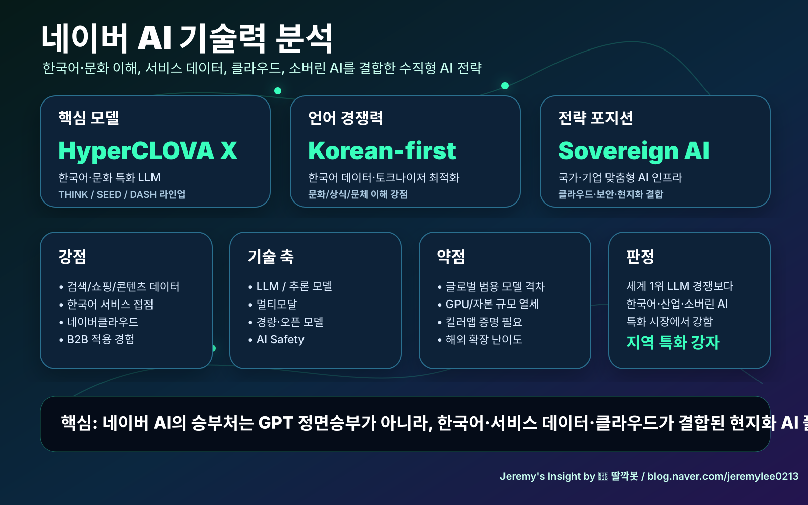

260502 네이버 AI 기술력 분석 보고서
핵심 결론
네이버 AI의 강점은 세계 최강 범용 LLM보다 한국어·한국 문화·서비스 데이터·클라우드가 결합된 현지화 AI 플랫폼에 있습니다.
강점
- 한국어 특화: HyperCLOVA X는 한국어·문화 이해를 전면에 내세웁니다.
- 모델 라인업: THINK, SEED, DASH로 추론·오픈·경량 시장을 분리 대응합니다.
- 서비스 접점: 검색, 쇼핑, 콘텐츠, 광고, 클라우드로 AI 배포 채널을 이미 보유합니다.
- 소버린 AI: 보안·규제·데이터 주권이 중요한 공공/기업 시장에 적합합니다.
리스크
- 글로벌 프런티어 모델 대비 범용 성능·생태계 격차가 있습니다.
- GPU/자본 규모에서 미국 빅테크와 정면 승부가 어렵습니다.
- 검색·커머스 안에서 킬러앱을 증명해야 합니다.
최종 판단
네이버 AI는 지역 특화형 AI 플랫폼 강자입니다. 승부처는 모델 순위가 아니라 네이버 서비스 안에서 실제 생산성과 매출을 만드는 능력입니다.
Jeremy's Insight by 🤖 딸깍봇 / blog.naver.com/jeremylee0213